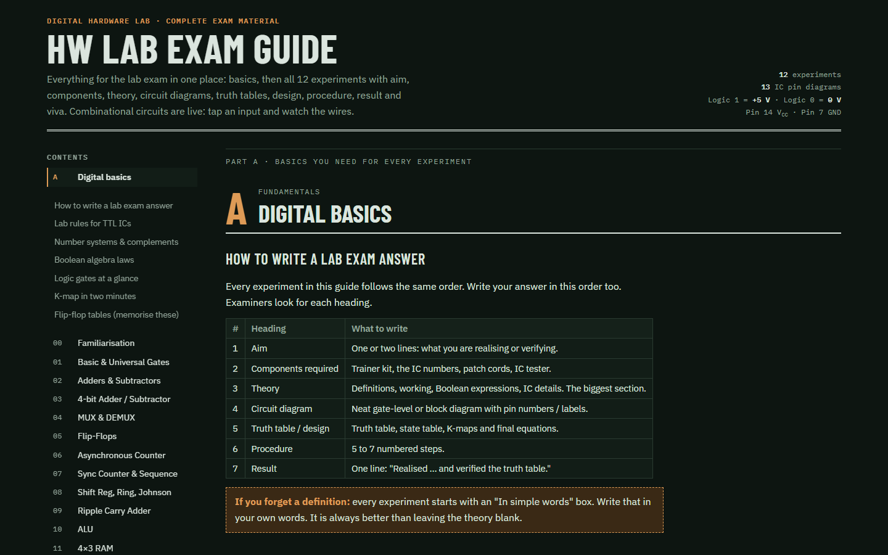
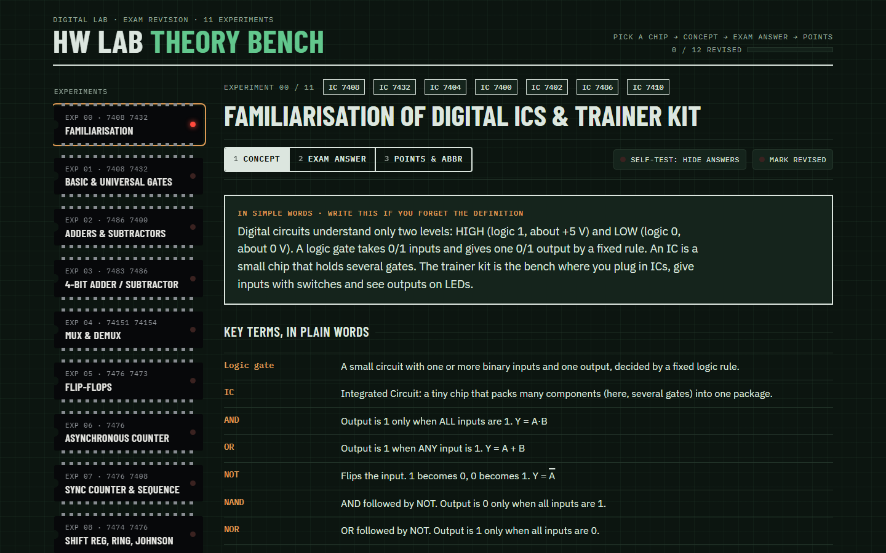
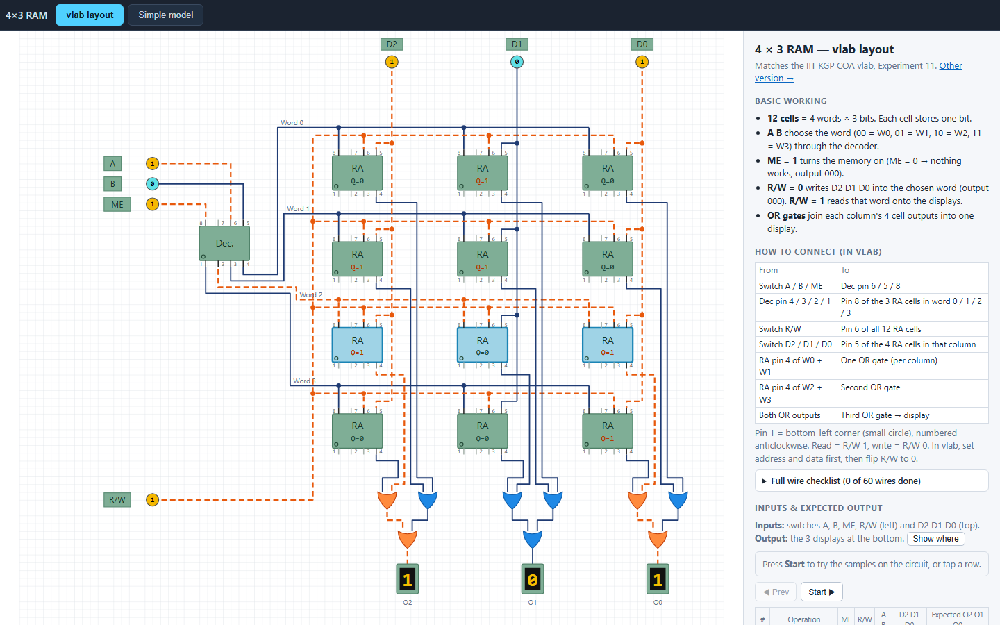

Everything I wish I had before the lab exam. A full exam guide, a quick revision bench with viva flashcards, and an interactive 4×3 RAM you can wire up and test. Opens in any browser. Nothing to install.

Every experiment written the way examiners want it.

Short notes for fast revision.

Read and write a real 4-word × 3-bit memory.
Read that experiment in the Exam Guide. Play with its live circuit until the truth table makes sense, then wire it on the trainer kit.
Go through the Theory Bench, one experiment a day. Practise writing the answer in the 7-heading format.
Run through the viva flashcards and the IC summary. Know pin 14 is VCC and pin 7 is GND by heart.
| No. | Experiment | Main ICs / parts | Open in |
|---|---|---|---|
| Combinational circuits · trainer kit | |||
| 00 | Familiarisation of Digital ICs & IC Trainer Kit | 7400 7402 7404 7408 7410 7432 7486 | GuideQuick |
| 01 | Boolean Functions using Basic & Universal Gates | 7400 7402 7404 7408 7432 | GuideQuick |
| 02 | Half / Full Adder & Half / Full Subtractor | 7486 7400 7408 7432 7404 | GuideQuick |
| 03 | Four-bit Adder / Subtractor | 7483 ×2, 7486 ×2 | GuideQuick |
| 04 | Combinational Circuits using MUX & DEMUX | 74151 74154 | GuideQuick |
| Sequential circuits · trainer kit | |||
| 05 | Flip-Flops (SR, JK, D, T, Master-Slave) | 7400 7410 7404 · 7476 7473 7474 | GuideQuick |
| 06 | Asynchronous (Ripple) 4-bit Up & Down Counter | 7476 ×2 | GuideQuick |
| 07 | Synchronous Counter & Sequence Generator | 7476 ×2, 7408 | GuideQuick |
| 08 | Shift Registers, Ring & Johnson Counter | 7474 ×2, 7476 ×2 | GuideQuick |
| Computer organisation · virtual lab | |||
| 09 | Design of Ripple Carry Adder vlab | 1 half adder, 3 full adders | GuideQuick |
| 10 | Design of a 4-bit ALU vlab | four 1-bit ALUs | GuideQuick |
| 11 | Design of 4×3 RAM Memory vlab | 12 RAM cells, decoder, 9 OR | GuideQuickSim |